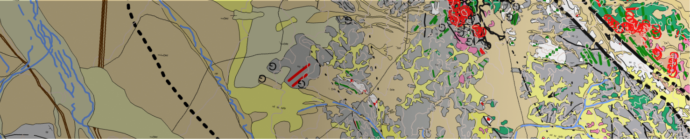
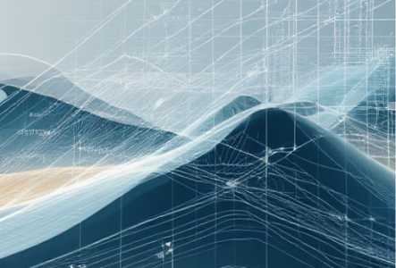
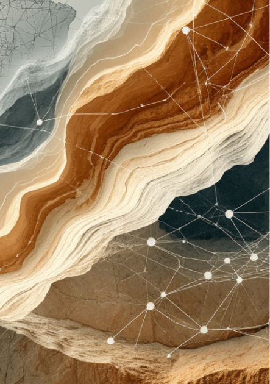
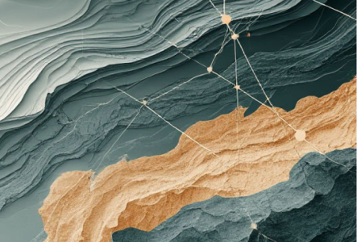
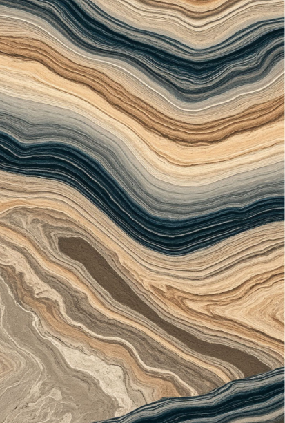

Комплексное интегрирование геоданных и анализ связи рудообразования с геолого-тектоническим развитием формируют научно обоснованную стратегию оценки рудоносного потенциала.
Работа с первичной геологической информацией сопряжена с рядом системных вызовов, которые могут привести к значительным финансовым потерям и потраченному впустую времени. Наши услуги направлены на их полное устранение или минимизацию.
Риски неэффективного планирования и распыления ресурсов
Неясность в объективной оценке перспективности участка
Неопределенность в локализации рудных зон внутри участка
Высокие и неоправданные затраты на полевые исследования
Наша методология — это поэтапный процесс превращения «сырых» данных в ценную интеллектуальную собственность и конкретный план действий.
Привязка и унификация геологических комплексов и структур
Мы начинаем с приведения всех разрозненных данных в единую систему координат и к единым условным обозначениям, сводим в единую базу данные о типах горных пород, их возрасте, составе, данных геохимии и геофизики. В результате создается цифровая основа — достоверная пространственная модель, на которую можно уверенно «нанизывать» последующие слои анализа.


Сравнительный анализ и поиск месторождений-аналогов
На этом этапе проводится экспертная геолого-
аналитическая работа для каждого типа рудных месторождений и определяются детальные поисковые критерии.
Мы используем собственные алгоритмы и накопленные данные по существующим эксплуатируемым
и установленным месторождениям и научно-методические наработки, используемые в мировой практике, чтобы найти объекты, аналогичные потенциальному на вашей
территории.
Мы анализируем:
Исследование тектонических проявлений, как фактора рудообразования
Выходя за рамки простого анализа карт, мы моделируем глубинные процессы, которые предопределяют местонахождение рудных зон.
Анализ тектоники помогает нам реконструировать процессы, которые происходили на территории, и понять, где создавались условия, благоприятные для накопления рудного вещества.

Комплексная интерпретация материалов и построение интегрированной прогнозной геологической модели
Это кульминация нашей работы. Мы объединяем результаты анализа геологических, геофизических, геохимических и дистанционных данных в едином пространстве.
Полученная модель не просто отображает объекты, а отражает взаимосвязи между ними, формируя целостное представление о территории.
Модель является нашим главным продуктом — визуализированным и количественно обоснованным прогнозом.
Заказчик по итогам работы получает не просто отчет и набор карт, а комплексное стратегическое решение, включающее:

Этот пакет документов служит надежным фундаментом для обоснования инвестиций, планирования бюджета и принятия взвешенных управленческих решений на всех последующих этапах проекта.
Мы строим целостную картину геологического развития территории и выявляем закономерности распределения минерализации, чтобы вы могли сконцентрировать разведку именно там, где она принесет результат. Наш анализ минимизирует ваши финансовые риски и многократно повышает шансы на открытие месторождения.
Оставьте заявку на консультацию — и наши эксперты расскажут, как применить этот комплексный подход для оценки потенциала вашей лицензионной площади.